Processo Civil I · aula-01
Petição inicial, demanda e emenda
7,530 words, two sittings · 7 chapters · 17 figures, 17 saying what they do · 18 quoted sources · no quiz
built on3.1
on15/10
byCodex
generation4 Grand Canyon
commits69
how it's built
- 1O caminho até a decisão1,247 w
- 2Quem abre a causa também a delimita1,210 w
- 3Dar ao conflito uma forma discutível1,344 w
- 4A tutela pretendida ganha contorno1,403 w
- 5A correção precede o encerramento601 w
- 6O processo avança e a demanda se estabiliza618 w
- 7As decisões nas provas1,106 w
its figures
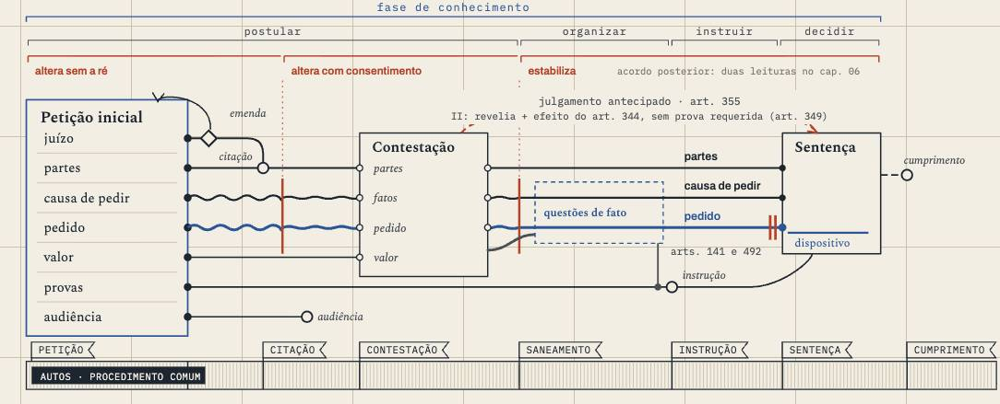
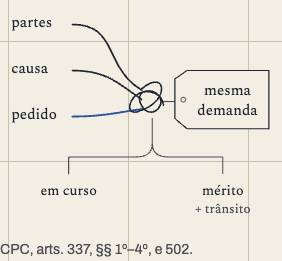
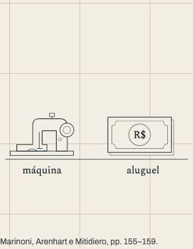
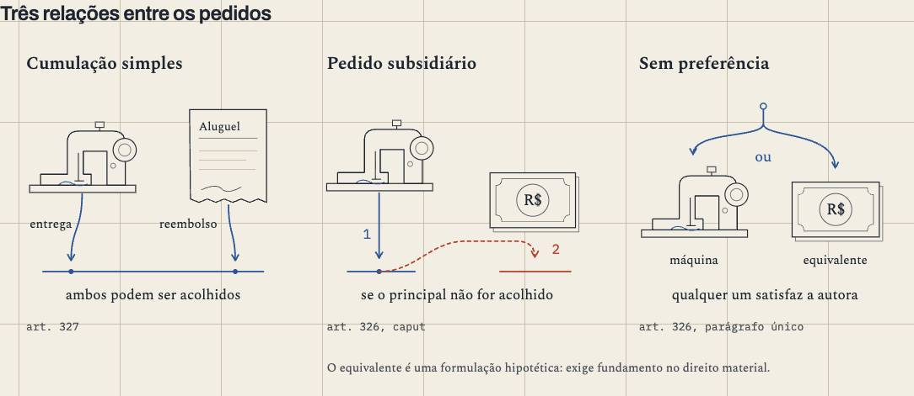
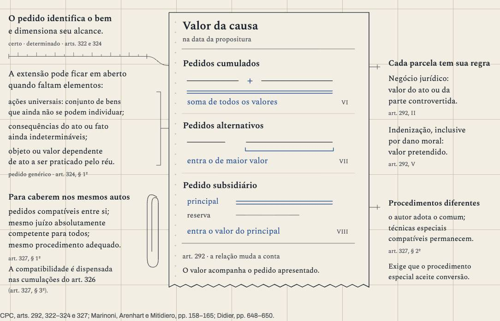
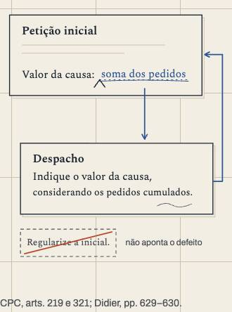
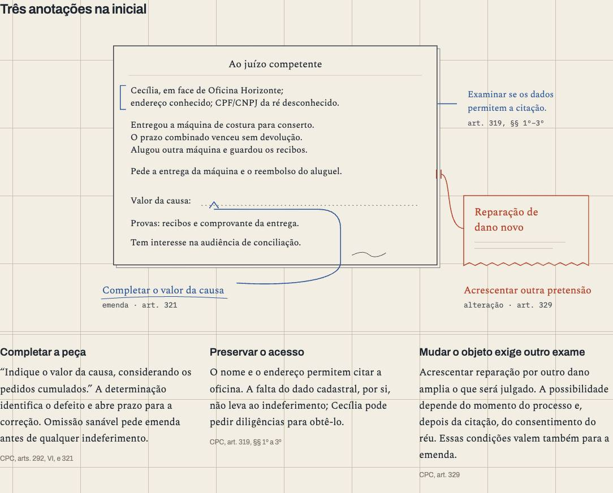
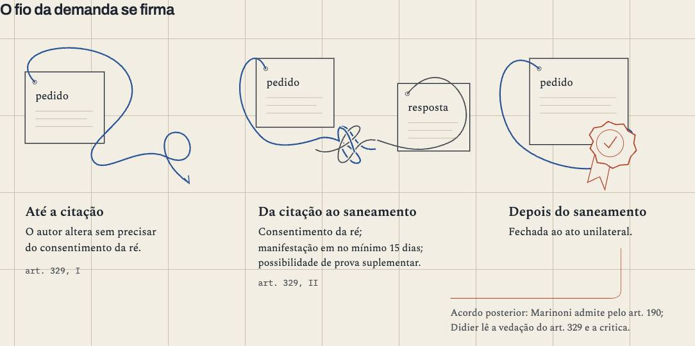
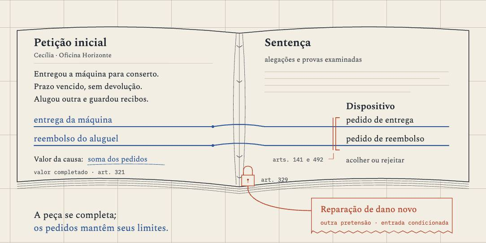
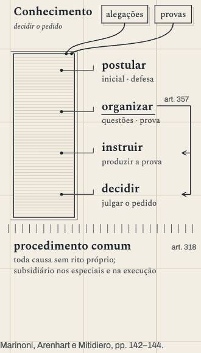
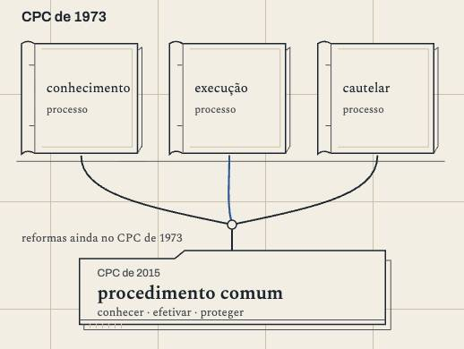
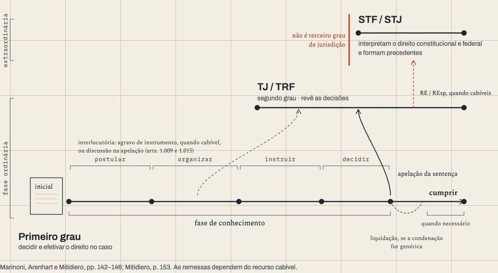
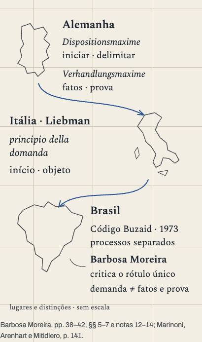
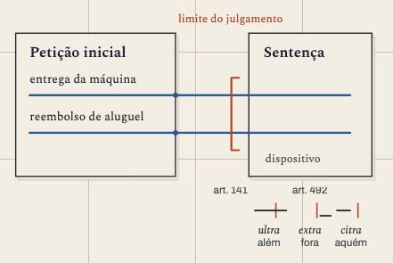
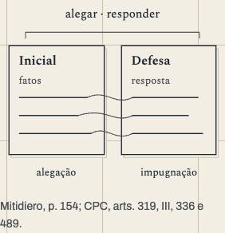
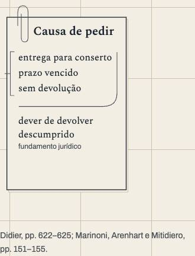
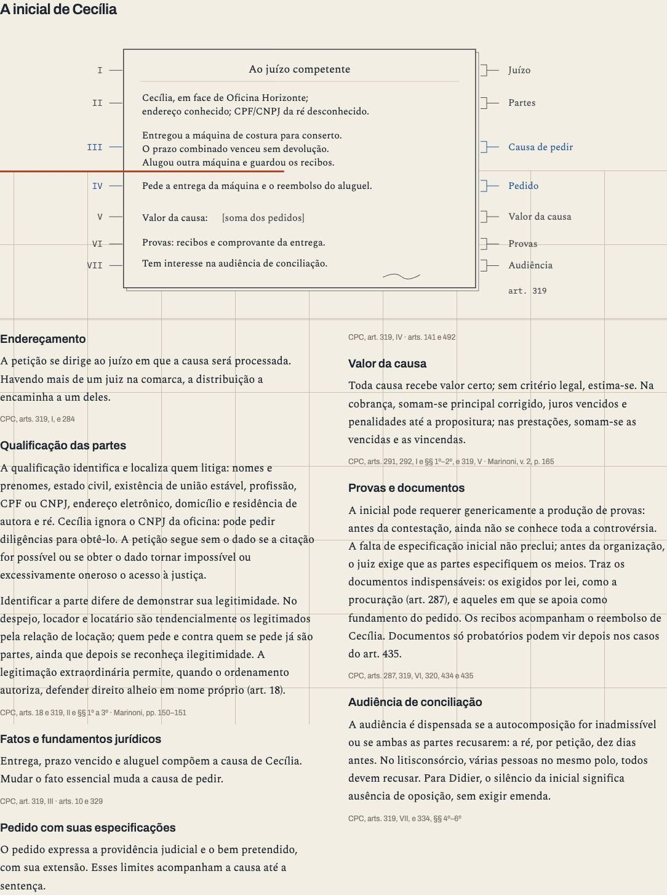
what it quotes
- 18×source
prepared for it · 25 chapters
- primarydidier-curso-vol1-2017 · PDF 615–649
- primarydidier-curso-vol1-2017 · PDF 650–664
- supportingcpc-lei-13105-capture-2026-09-28 · Art. 2
- supportingcpc-lei-13105-capture-2026-09-28 · Art. 141
- supportingcpc-lei-13105-capture-2026-09-28 · Art. 287
- supportingcpc-lei-13105-capture-2026-09-28 · Art. 291
- supportingcpc-lei-13105-capture-2026-09-28 · Art. 292
- supportingcpc-lei-13105-capture-2026-09-28 · Art. 293
the course, as I read it
Drawn as the things it talks about.
its checks
negated inference 0.0 / 0.5
gap talk 0.3 / 0.1
contrast tail 0.3 / 0.5
staged reveal 5.6 / 8.0
its life
- 17/11Metodologia Aula 01: one page, computed clocks, maps, OCR, paper drawings (r20 Codex, r21 Sonnet)
- 13/11Visual gate checks what a figure is, not the verb it claims
- 12/11Proc Aula 01: hero planta traces a thread on hover/focus (data-fio), calm fade
- 12/11One exam-item standard (.xq) with a smooth reveal; Processo and Metodologia Aula 01 moved onto it
- 12/11Stepped drawings on screen when they change: centred in their passage; in-place blocks change at the lower third; long 01.2 spreads travel gently on s
- 12/11Proc Aula 01 fig. 11 redrawn as the petition's closing sheet (Sonnet); MJ Aula 01.2 polish: scale hero, folio station line, conceitos tree, the opinio
- 12/11Lesson endings: bottom navigation sits in the lesson column; hidden exam grounds take no space; the last open question uses the full width
- 12/11Proc Aula 01 editorial pass (Sonnet), light hand on the approved page: round-8 additions reordered and untangled; edit_guard PASS
nextone sitting · opening bet · instrument figures (my note of 25/10: keep · deslop)